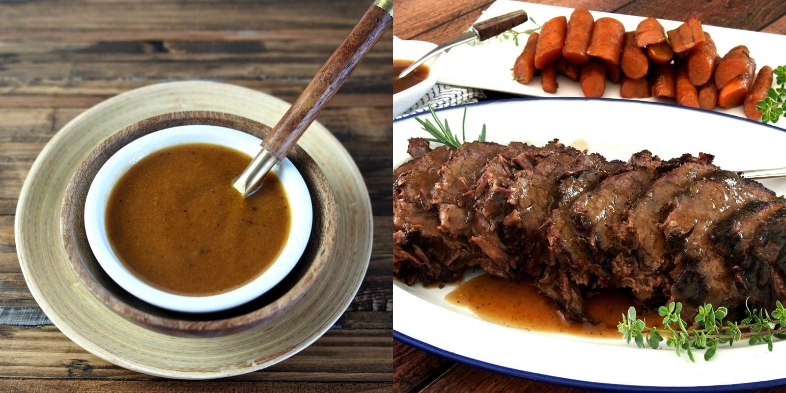

Cinnamon Brewet

Cinnamon Brewet is a dish from 14th century France, it is a fancy way of saying its a pork roast with cinnamon.
Ingredients:
- 4 lbs. Beef Roast
- 2 cups Almonds, ground
- 2 tsp. Cinnamon
- 1/2 tsp. Ginger
- 1/2 tsp. Cloves
- 2-4 cups Red Wine
- 2-3 cups Beef stock
Preparation:
- Season beef with sprinkling of cinnamon and brown on all sides.
- Place into a roasting pan add red wine and beef stock and half of the rest of the spices.
- Braise in a 350°F oven for 1 1/2 to 2 hours until well done.
- Remove from oven; take beef from roasting pan, drain juices and separate fat.
- Place meat broth into a sauce pan and bring to a boil, add almonds and begin to thicken
- Taste, add additional spices as needed.
- Strain thickened sauce.
- Slice meat and serve with thickened sauce.
Main Page